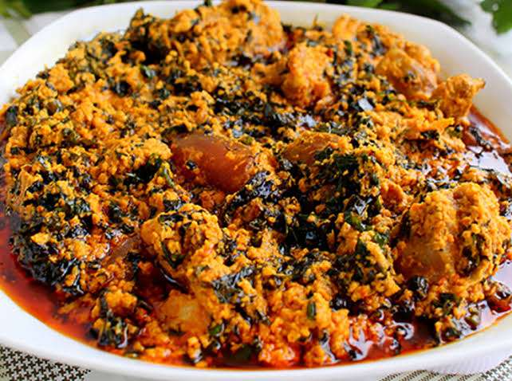
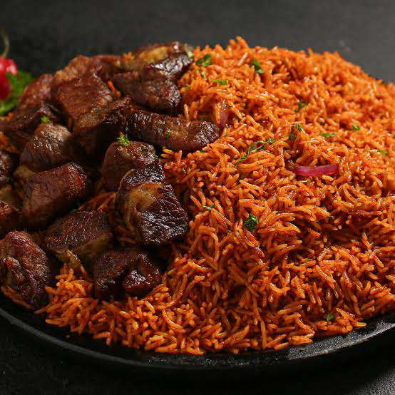
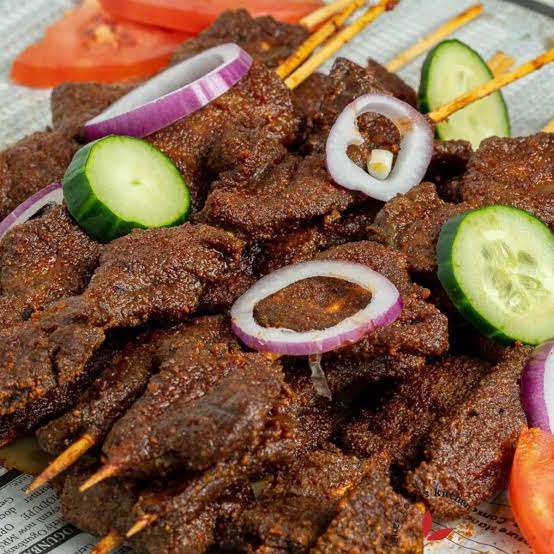
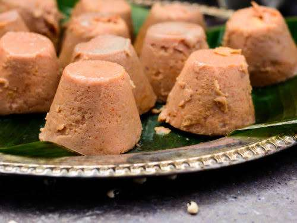

Egusi Soup
Rich melon seed soup enjoyed across Nigeria.
Explore traditional dishes, healthy nutrition tips, and cooking guides from across Nigeria.
Explore Recipes
One of Nigeria’s most beloved dishes made with rice, tomatoes, peppers, and spices.

Rich melon seed soup enjoyed across Nigeria.

Spicy grilled beef skewers.

Steamed bean pudding rich in protein.
Beans, fish, eggs support body growth and repair.
Provide vitamins, minerals, and antioxidants.
Combine carbs, protein, and healthy fats.